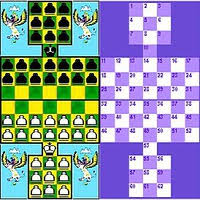

Разработчик компьютерной версии игры
Алтай Шатра
В Республике Алтай, особой популярностью пользуется игра "Алтай Шатра" (алтайские шашки/шахматы). Эта своеобразная игра, которая развивает абстрактное мышление, внимательность, и ум. По моему мнению, эта игра достойна особого внимания. В настоящий момент любителей этой игры становится все больше и больше.
В основе игры лежит образное представление войн. В игре присутствует: шибе(крепость), бий(король), баатыр(богатырь), шатра(пешка). Из-за своеобразной доски в игре очень часто встречаются блестящие комбинации.
История
Является древним народным интеллектуальным видом спорта алтайцев. Данный вид шашек был воссоздан на Алтае в 1970—1980-е годы. Правила игры были разработаны при участии специалистов из Горно-Алтайского научно-исследовательского института истории, языка и литературы и опубликованы в областной газете «Звезда Алтая» и в некоторых районных газетах
Разработчик компьютерной версии игры
Программу под Windows для игры в алтайские шашки написал Фрэнсис Монкман в 2000 году.
Алтай шатра в сайте для настольных игр
Сайт Abstract Games включил в себя игру Алтай Шатра и по сей день проводяться онлайн турниры по этой игре на этом сайте.
↑